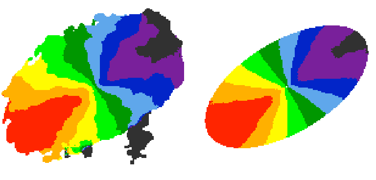

2DFIT task¶
The classical 2D tilted-ring modelling of a galaxy: a model velocity field is fitted to the observed velocity field (see, e.g., Begeman 1987). This technique is fast and good for high spatial resolution data, but completely unreliable for low resolution data (no beam smearing correction).
Parameters¶
2DFIT [false]. This flag enables the 2D fitting of the velocity field.
Parameters and options that control the task are in common with 3DFIT. In particular, 2DFIT supports the following parameters: NRADII, RADSEP, XPOS, YPOS, VSYS, VROT, VRAD, PA, INC, FREE, SIDE, WFUNC. If FITSFILE is a datacube, the velocity field to fit is extracted as 1st moment using a mask for the input datacube defined by the MASK parameter (written in the output directory). If FITSFILE is a 2D velocity map, this is used to fit the tilted-ring model.
Outputs¶
The task produces the following outputs. NAME is the name of the galaxy.
A FITS file NAMEmap_1st.fits with the velocity field used for the fit.
A FITS file NAMEmao_2d_mod.fits, containing the model velocity field.
A text file NAME_2dtrm.txt, with the best-fit parameters ring-by-ring.
Example¶
The following example parameter fits a 2D tilted-ring model to the usual NGC2403 datacube.
FITSFILE ngc2403.fits
/////////// 2DFIT parameters /////////////
2DFIT true
// Input rings
NRADII 41
RADSEP 30
VSYS 132.8
XPOS 77
YPOS 77
VROT 120
INC 60
PA 123.7
// Free parameters
FREE VROT INC PA
// Mask for extracting velocity field
MASK SEARCH
// Which side to fit
SIDE B
// Weighting function
WFUNC 2
///////////////////////////////////////////


Observed (left) and modelled (right) velocity field for NGC 2403.¶